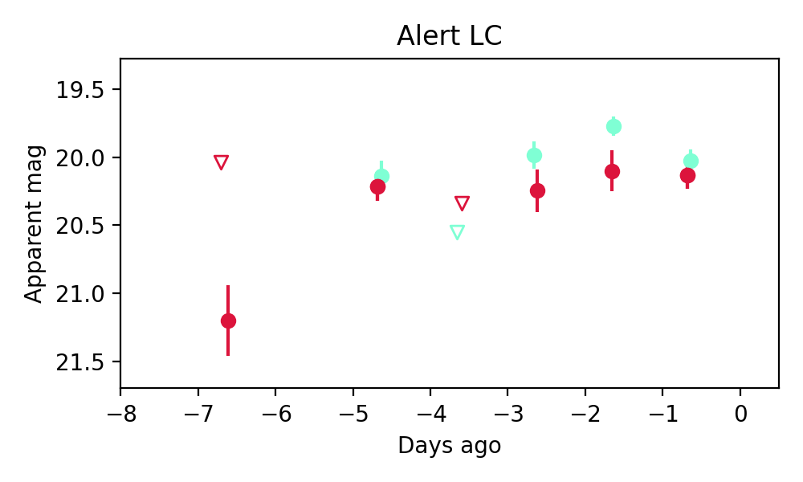
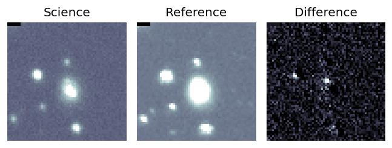

Candidate List 20250630Previous Day Next Day
Section 1: New Sources (age<1d) Section 2: Old (1-5d) sources observed last nightplaceholder
Section 1: New Afterglow/FBOT Cands Last Night (0)
Section 2: Older Sources Observed Last Night (4)
0. ZTF25aaxpdfh (Afterglow?) [Back to Top] [Share] [Trigger Swift] [Fritz] [Lasair]RA, Dec: 232.77207, -10.95939 15h31m5.30s, -10d-57m-33.80sGalactic (l, b): 353.79628, 35.69737 ext(g-r) = 0.232
PS1: 1 source in 3 arcsec Closest: d = 7.32 arcsec photoz=0.03+/-0.01 peak abs mag = -17.55
LegacySurvey: 0 sources in 3 arcsec
Extinction-corrected gr color:
From alerts: 0.1 +/- 99 mag
Rise Rate:
g: 0.25 mag/day
r: 0.7 mag/day
i: -99 mag/day
Fade Rate:
g: 0.86 mag/day
r: 0.24 mag/day
i: -99 mag/day
1. ZTF25aaxqdbg (Afterglow?) [Back to Top] [Share] [Trigger Swift] [Fritz] [Lasair]RA, Dec: 287.25876, -16.16147 19h 9m2.10s, -16d-9m-41.29sGalactic (l, b): 20.328, -11.09819 ext(g-r) = 0.152

PS1: 0 sources in 3 arcsec
LegacySurvey: 0 sources in 3 arcsec

Extinction-corrected gr color:
From alerts: -0.34 +/- 0.15 mag
Rise Rate:
g: 0.18 mag/day
r: 0.19 mag/day
i: -99 mag/day
Fade Rate:
g: 0.21 mag/day
r: 0.66 mag/day
i: -99 mag/day
2. ZTF25aaxvyqy (Afterglow?) [Back to Top] [Share] [Trigger Swift] [Fritz] [Lasair]RA, Dec: 245.41644, 58.59909 16h21m39.94s, 58d35m56.72sGalactic (l, b): 89.01446, 42.15365 ext(g-r) = 0.014


PS1: 0 sources in 3 arcsec
LegacySurvey: 0 sources in 3 arcsec

Extinction-corrected gr color:
From alerts: -0.34 +/- 0.17 mag
Rise Rate:
g: 0.57 mag/day
r: 0.24 mag/day
i: -99 mag/day
Fade Rate:
g: 0.42 mag/day
r: -99 mag/day
i: -99 mag/day
3. ZTF25aaylqqq (Afterglow?) [Back to Top] [Share] [Trigger Swift] [Fritz] [Lasair]RA, Dec: 321.37727, 20.50401 21h25m30.55s, 20d30m14.45sGalactic (l, b): 71.18126, -21.06429 ext(g-r) = 0.113

PS1: 0 sources in 3 arcsec
LegacySurvey: 0 sources in 3 arcsec

Extinction-corrected gr color:
From alerts: 0.37 +/- 0.12 mag
Consistent with synchrotron, g-r>0!
Rise Rate:
g: 0.37 mag/day
r: 0.42 mag/day
i: -99 mag/day
Fade Rate:
g: 27.85 mag/day
r: -99 mag/day
i: -99 mag/day